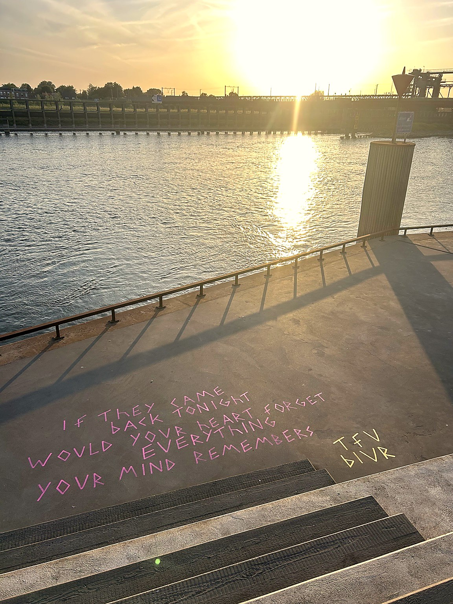
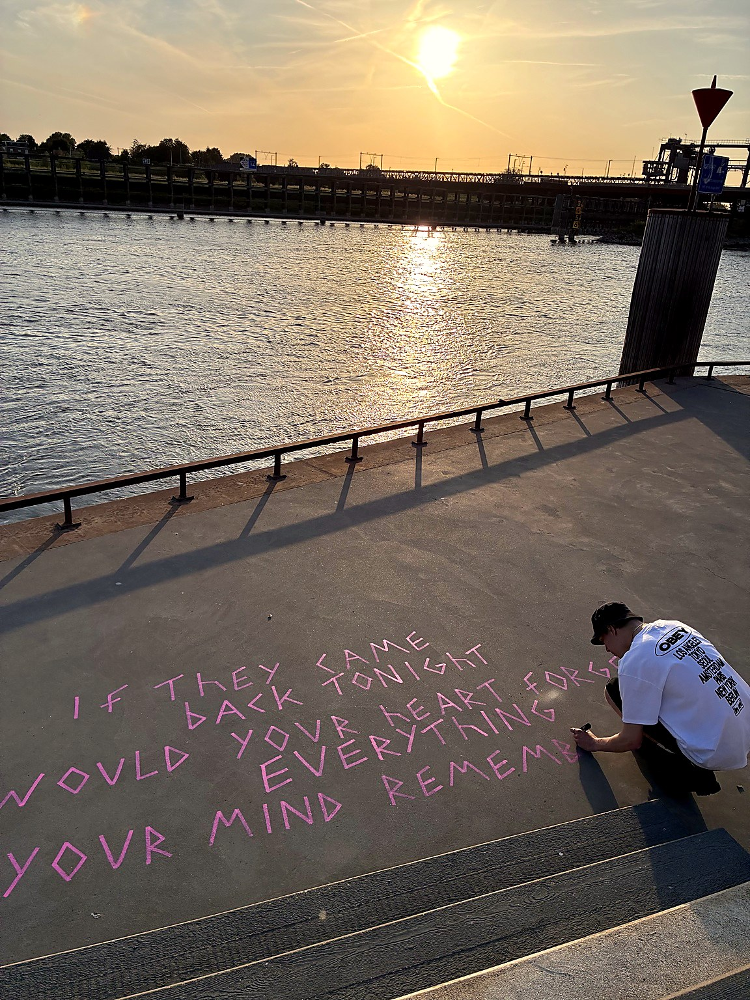
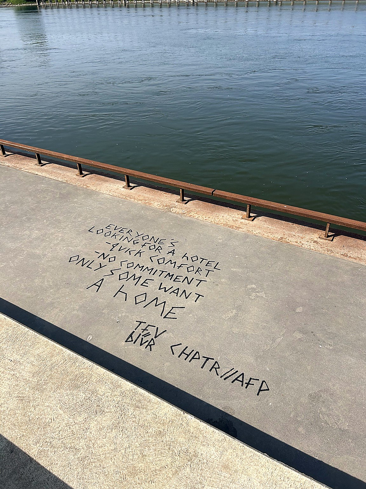
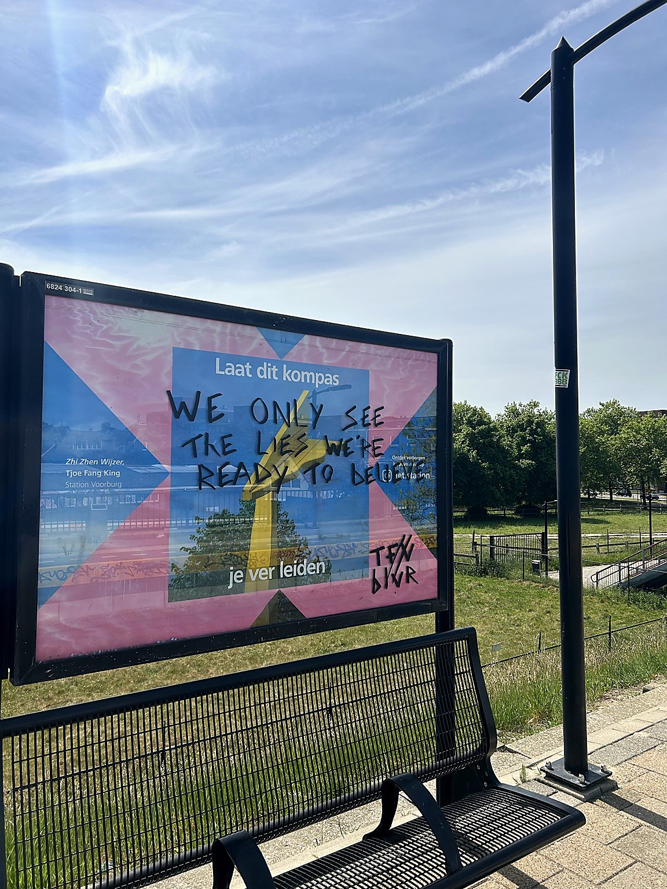
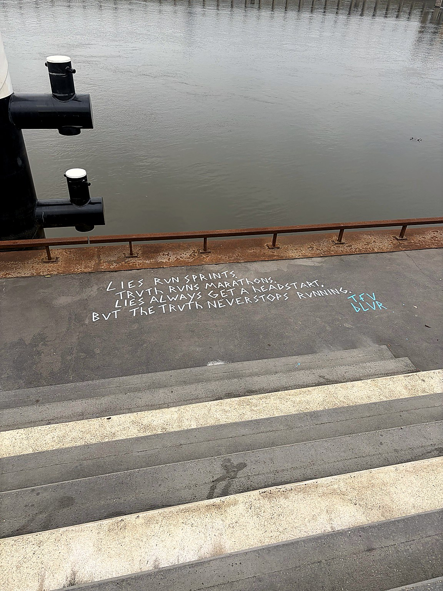
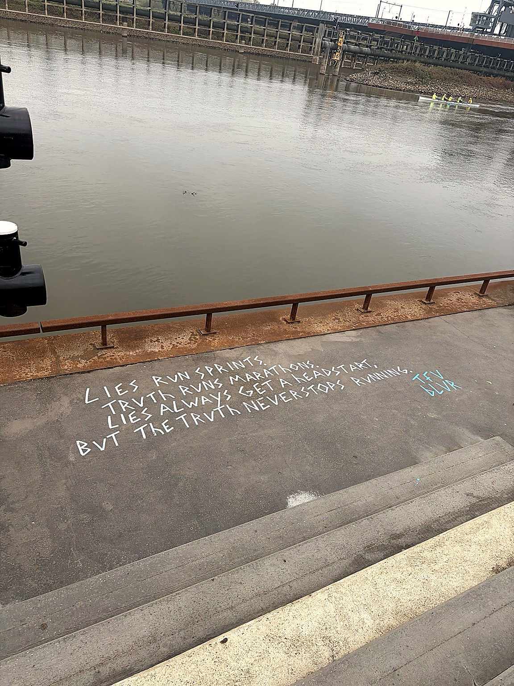
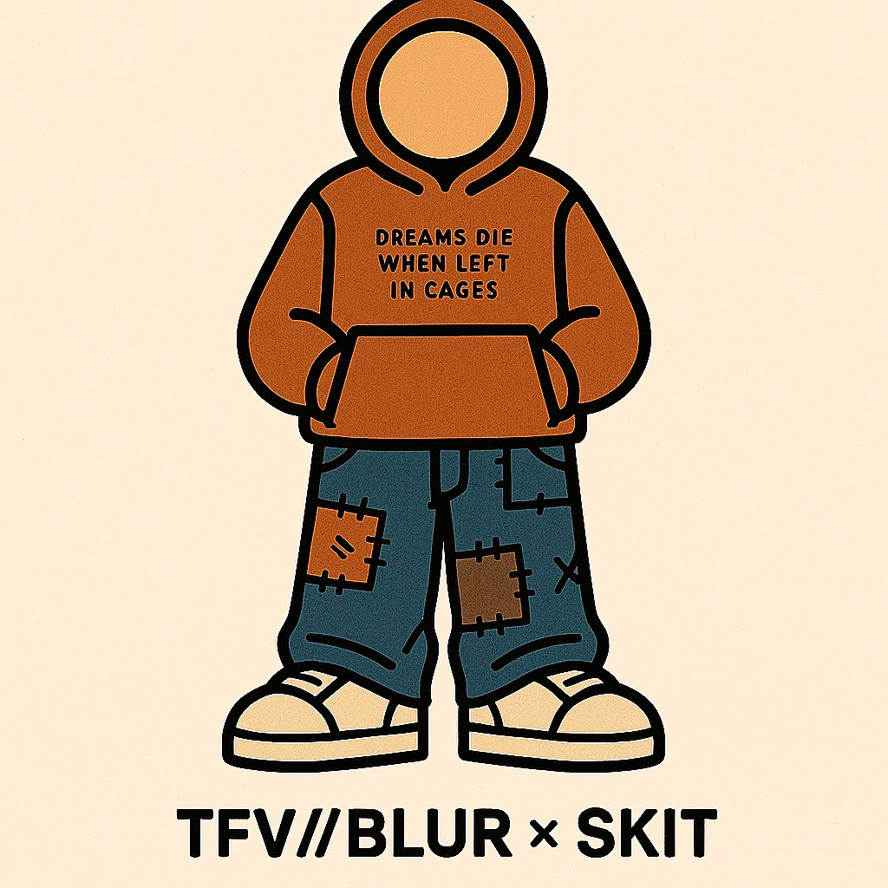

A PERSONAL ARCHIVE
NOTHING
STAYS IN
FOCUS.
Skate, create, leave a mark. A collection of places, thoughts and questions from along the way.
ENTER THE ARCHIVE ↘A LITTLE LESS POLISHED. A LITTLE MORE PERSONAL.
MADE FOR THE
IN-BETWEEN.
TFV BLUR lives somewhere between the pavement and the page. A project shaped by skateboarding, music, visual culture and the things we notice when we slow down.
Not a uniform. Not a rulebook. Just a point of view — collected, written, photographed and worn.
//
BLUR INDEPENDENT
BY NATURE
THE BLUR
ARCHIVE.
FRAGMENTS OF REAL LIFE.
NO FIXED DIRECTION.





A RUNNING COLLECTION — MORE TO COME.
A SYMBOL FOR KEEPING YOUR OWN WAY.
DREAMS DIE
WHEN LEFT
IN CAGES.
The little reminder behind the graphics: stay curious, make things, keep moving. The character appears in sketches, garments and whatever comes next.
COLLABORATE / SAY HELLO ↗
CHARACTER STUDY — SKIT / 001KEEP YOUR
EYES OPEN.
A RUNNING COLLECTION OF INSPIRATION
Skate spots, record sleeves, handwritten thoughts, late sunsets, old magazines and new friends. This is where the loose ends live.
COLLABORATIONS / QUESTIONS / GOOD IDEAS
MAKE A
LITTLE NOISE.
HELLO@TFVBLUR.COM ↗
Replace this example email with your own when you're ready.
BY NATURE. © TFV//BLUR 2026